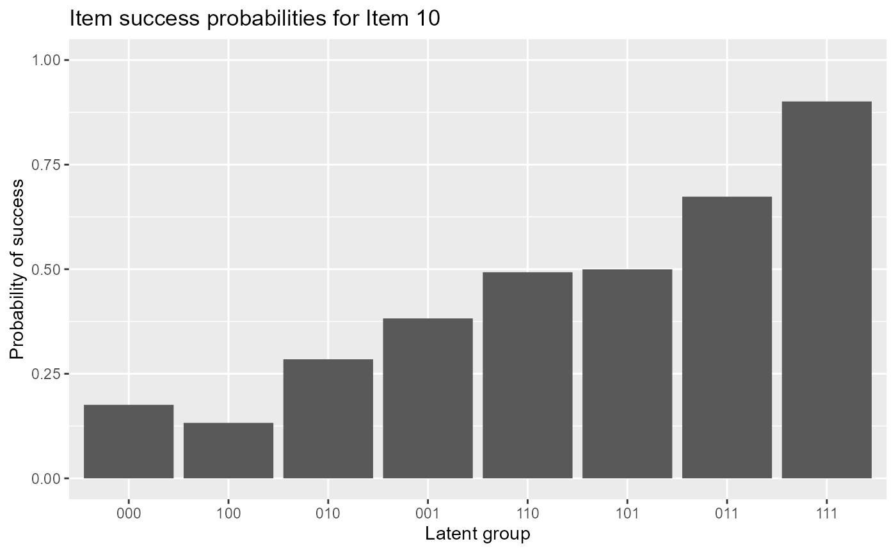
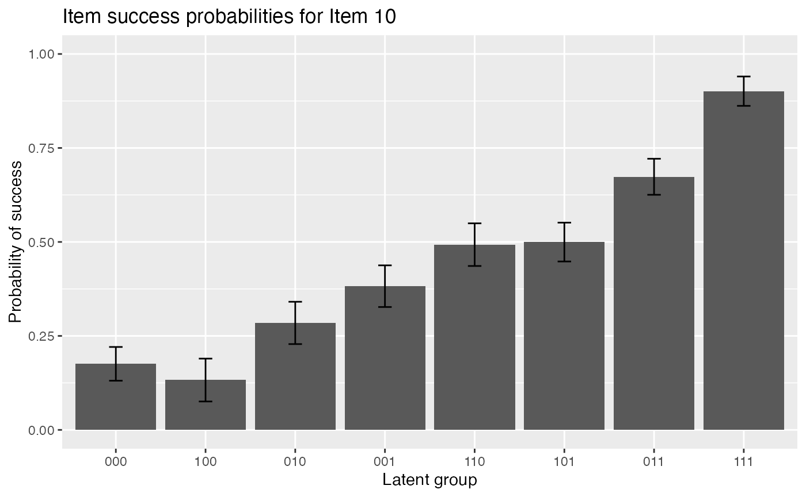
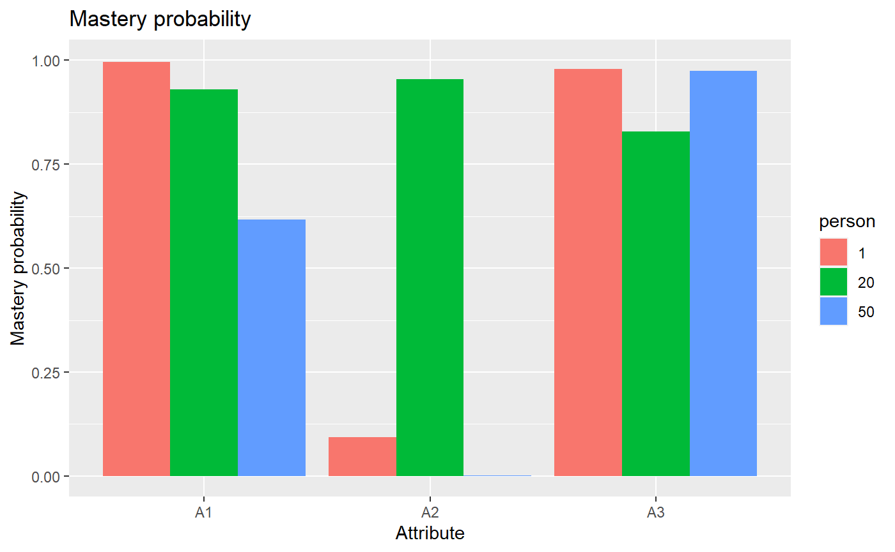

vignettes/OnlineExercises/GDINA_example.Rmd
GDINA_example.RmdThis tutorial is created using R markdown and knitr. It illustrates how to use the GDINA R pacakge (version 2.7.0) to estimate the G-DINA model.
The following code estimates the G-DINA model.
## GDINA Package [Version 2.7.0; 2019-8-8]
## More information: https://wenchao-ma.github.io/GDINA# A simulated data in GDINA package
dat <- sim10GDINA$simdat
Q <- sim10GDINA$simQ
# Estimating GDINA model
est <- GDINA(dat = dat, Q = Q, model = "GDINA")##
Iter = 1 Max. abs. change = 0.40691 Deviance = 12821.16
Iter = 2 Max. abs. change = 0.05266 Deviance = 11947.64
Iter = 3 Max. abs. change = 0.02836 Deviance = 11890.21
Iter = 4 Max. abs. change = 0.01736 Deviance = 11866.22
Iter = 5 Max. abs. change = 0.01173 Deviance = 11854.67
Iter = 6 Max. abs. change = 0.00886 Deviance = 11848.42
Iter = 7 Max. abs. change = 0.00763 Deviance = 11844.68
Iter = 8 Max. abs. change = 0.00643 Deviance = 11842.26
Iter = 9 Max. abs. change = 0.00557 Deviance = 11840.64
Iter = 10 Max. abs. change = 0.00503 Deviance = 11839.51
Iter = 11 Max. abs. change = 0.00449 Deviance = 11838.71
Iter = 12 Max. abs. change = 0.00398 Deviance = 11838.14
Iter = 13 Max. abs. change = 0.00351 Deviance = 11837.72
Iter = 14 Max. abs. change = 0.00308 Deviance = 11837.42
Iter = 15 Max. abs. change = 0.00270 Deviance = 11837.19
Iter = 16 Max. abs. change = 0.00237 Deviance = 11837.02
Iter = 17 Max. abs. change = 0.00208 Deviance = 11836.89
Iter = 18 Max. abs. change = 0.00183 Deviance = 11836.79
Iter = 19 Max. abs. change = 0.00161 Deviance = 11836.72
Iter = 20 Max. abs. change = 0.00142 Deviance = 11836.66
Iter = 21 Max. abs. change = 0.00125 Deviance = 11836.61
Iter = 22 Max. abs. change = 0.00110 Deviance = 11836.57
Iter = 23 Max. abs. change = 0.00098 Deviance = 11836.54
Iter = 24 Max. abs. change = 0.00087 Deviance = 11836.52
Iter = 25 Max. abs. change = 0.00077 Deviance = 11836.50
Iter = 26 Max. abs. change = 0.00069 Deviance = 11836.49
Iter = 27 Max. abs. change = 0.00061 Deviance = 11836.47
Iter = 28 Max. abs. change = 0.00055 Deviance = 11836.47
Iter = 29 Max. abs. change = 0.00049 Deviance = 11836.46
Iter = 30 Max. abs. change = 0.00044 Deviance = 11836.45
Iter = 31 Max. abs. change = 0.00039 Deviance = 11836.45
Iter = 32 Max. abs. change = 0.00035 Deviance = 11836.44
Iter = 33 Max. abs. change = 0.00032 Deviance = 11836.44
Iter = 34 Max. abs. change = 0.00029 Deviance = 11836.44
Iter = 35 Max. abs. change = 0.00026 Deviance = 11836.43
Iter = 36 Max. abs. change = 0.00023 Deviance = 11836.43
Iter = 37 Max. abs. change = 0.00021 Deviance = 11836.43
Iter = 38 Max. abs. change = 0.00019 Deviance = 11836.43
Iter = 39 Max. abs. change = 0.00017 Deviance = 11836.43
Iter = 40 Max. abs. change = 0.00016 Deviance = 11836.43
Iter = 41 Max. abs. change = 0.00014 Deviance = 11836.43
Iter = 42 Max. abs. change = 0.00013 Deviance = 11836.42
Iter = 43 Max. abs. change = 0.00012 Deviance = 11836.42
Iter = 44 Max. abs. change = 0.00011 Deviance = 11836.42
Iter = 45 Max. abs. change = 0.00010 Deviance = 11836.42The following code extracts the summary information from GDINA estimates.
#####################################
#
# Summary Information
#
#####################################
# print estimation information
est## Call:
## GDINA(dat = dat, Q = Q, model = "GDINA")
##
## GDINA version 2.7.0 (2019-8-8)
## ===============================================
## Data
## -----------------------------------------------
## # of individuals groups items
## 1000 1 10
## ===============================================
## Model
## -----------------------------------------------
## Fitted model(s) = GDINA
## Attribute structure = saturated
## Attribute level = Dichotomous
## ===============================================
## Estimation
## -----------------------------------------------
## Number of iterations = 45
##
## For the final iteration:
## Max abs change in item success prob. = 0.0001
## Max abs change in mixing proportions = 0.0000
## Change in -2 log-likelihood = 0.0004
## Converged? = TRUE
##
## Time used = 0.08377 secs##
## Test Fit Statistics
##
## Loglik = -5918.21
##
## AIC = 11926.42 | penalty [2 * p] = 90.00
## BIC = 12147.27 | penalty [(log n) * p] = 310.85
## CAIC = 12147.32 | penalty [(log n + 1) * p] = 310.89
## SABIC = 12004.35 | penalty [(log (n + 2)/24) * p] = 167.93
##
## No. of parameters (p) = 45
## No. of estimated item parameters = 38
## No. of fixed item parameters = 0
## No. of distribution parameters = 7
##
## Attribute Prevalence
##
## Level0 Level1
## A1 0.5027 0.4973
## A2 0.4974 0.5026
## A3 0.4784 0.5216## [1] 11926.42## [1] 12147.27## 'log Lik.' -5918.211 (df=45)## [1] 11836.42## No. of total parameters = 45
## No. of population parameters = 7
## No. of free item parameters = 38
## No. of fixed item parameters = 0## [1] 1000The estimated latent class size can be obtained by
## 000 100 010 001 110 101 011
## [1,] 0.1267808 0.1053483 0.11497 0.1201007 0.1312817 0.1451415 0.140898
## 111
## [1,] 0.115479The tetrachoric correlation between attributes can be calculated by
# psych package needs to be installed
library(psych)
psych::tetrachoric(x = extract(est,"attributepattern"),
weight = extract(est,"posterior.prob"))## Call: psych::tetrachoric(x = extract(est, "attributepattern"), weight = extract(est,
## "posterior.prob"))
## tetrachoric correlation
## A1 A2 A3
## A1 1.00
## A2 -0.02 1.00
## A3 0.01 -0.04 1.00
##
## with tau of
## A1 A2 A3
## 0.0069 -0.0066 -0.0542You can use extract with argument discrim to extract discrimination indices. The first column gives \(P(1)-P(0)\) and the second column gives the GDINA discrimination index.
## P(1)-P(0) GDI
## Item 1 0.6934120 0.12020141
## Item 2 0.6405419 0.10257064
## Item 3 0.8198848 0.16773857
## Item 4 0.7797695 0.08455288
## Item 5 0.7173909 0.10215095
## Item 6 0.7406696 0.10203425
## Item 7 0.7168750 0.06522977
## Item 8 0.7893286 0.09124453
## Item 9 0.7062429 0.06232943
## Item 10 0.7253567 0.05496962For test level model data fit, use modelfit function:
## Test-level Model Fit Evaluation
##
## Relative fit statistics:
## -2 log likelihood = 11836.42 ( number of parameters = 45 )
## AIC = 11926.42 BIC = 12147.27
## CAIC = 12147.32 SABIC = 12004.35
##
## Absolute fit statistics:
## M2 = 6.8584 df = 10 p = 0.7387
## RMSEA2 = 0 with 90 % CI: [ 0 , 0.025 ]
## SRMSR = 0.0205itemfit function also provide test level model fit information:
## Summary of Item Fit Analysis
##
## Call:
## itemfit(GDINA.obj = est)
##
## mean[stats] max[stats] max[z.stats] p-value
## Proportion correct 0.0011 0.0026 0.1683 0.8663
## Transformed correlation 0.0154 0.0630 1.9893 0.0467
## Log odds ratio 0.0687 0.2795 1.9482 0.0514
## adj.p-value
## Proportion correct 1
## Transformed correlation 1
## Log odds ratio 1
## Note: p-value and adj.p-value are associated with max[z.stats].
## adj.p-values are based on the holm method.itemfit also provide item-level fit information:
##
## Item-level fit statistics
## z.prop pvalue[z.prop] max[z.r] pvalue.max[z.r] adj.pvalue.max[z.r]
## Item 1 0.0598 0.9523 0.4465 0.6552 1.0000
## Item 2 0.0108 0.9914 0.5339 0.5934 1.0000
## Item 3 0.0063 0.9950 1.4319 0.1522 1.0000
## Item 4 0.0343 0.9726 1.9893 0.0467 0.4200
## Item 5 0.0957 0.9237 1.9893 0.0467 0.4200
## Item 6 0.0372 0.9703 1.4319 0.1522 1.0000
## Item 7 0.1669 0.8674 1.5507 0.1210 1.0000
## Item 8 0.0858 0.9316 1.8360 0.0664 0.5972
## Item 9 0.0721 0.9425 1.8360 0.0664 0.5972
## Item 10 0.1683 0.8663 0.6386 0.5231 1.0000
## max[z.logOR] pvalue.max[z.logOR] adj.pvalue.max[z.logOR]
## Item 1 0.4503 0.6525 1.0000
## Item 2 0.5347 0.5929 1.0000
## Item 3 1.4320 0.1522 1.0000
## Item 4 1.9482 0.0514 0.4625
## Item 5 1.9482 0.0514 0.4625
## Item 6 1.4320 0.1522 1.0000
## Item 7 1.5333 0.1252 1.0000
## Item 8 1.8159 0.0694 0.6244
## Item 9 1.8159 0.0694 0.6244
## Item 10 0.6214 0.5343 1.0000#####################################
#
# structural parameters
#
#####################################The following code gives the item probalities of each reduced latent classes. As shown below, the probability of answering item 1 correctly for individuals who do not master the required attribute is 0.2052, and the probability of answering item 1 correctly for individuals who master the required attribute is 0.8986:
## $`Item 1`
## P(0) P(1)
## 0.2052 0.8986
##
## $`Item 2`
## P(0) P(1)
## 0.1391 0.7796
##
## $`Item 3`
## P(0) P(1)
## 0.0893 0.9092
##
## $`Item 4`
## P(00) P(10) P(01) P(11)
## 0.1159 0.2951 0.4741 0.8956
##
## $`Item 5`
## P(00) P(10) P(01) P(11)
## 0.1057 0.0791 0.0904 0.8231
##
## $`Item 6`
## P(00) P(10) P(01) P(11)
## 0.1764 0.9029 0.9302 0.9170
##
## $`Item 7`
## P(00) P(10) P(01) P(11)
## 0.0543 0.4712 0.3922 0.7712
##
## $`Item 8`
## P(00) P(10) P(01) P(11)
## 0.1107 0.2585 0.2730 0.9000
##
## $`Item 9`
## P(00) P(10) P(01) P(11)
## 0.0995 0.3746 0.4189 0.8057
##
## $`Item 10`
## P(000) P(100) P(010) P(001) P(110) P(101) P(011) P(111)
## 0.1757 0.1326 0.2846 0.3823 0.4928 0.4997 0.6734 0.9011The following code gives the item probalities of each reduced latent classes with standard errors.
## $`Item 1`
## P(0) P(1)
## Est. 0.2052 0.8986
## S.E. 0.0258 0.0224
##
## $`Item 2`
## P(0) P(1)
## Est. 0.1391 0.7796
## S.E. 0.0221 0.0247
##
## $`Item 3`
## P(0) P(1)
## Est. 0.0893 0.9092
## S.E. 0.0213 0.0199
##
## $`Item 4`
## P(00) P(10) P(01) P(11)
## Est. 0.1159 0.2951 0.4741 0.8956
## S.E. 0.0279 0.0369 0.0379 0.0282
##
## $`Item 5`
## P(00) P(10) P(01) P(11)
## Est. 0.1057 0.0791 0.0904 0.8231
## S.E. 0.0249 0.0252 0.0256 0.0335
##
## $`Item 6`
## P(00) P(10) P(01) P(11)
## Est. 0.1764 0.9029 0.9302 0.917
## S.E. 0.0412 0.0314 0.0280 0.023
##
## $`Item 7`
## P(00) P(10) P(01) P(11)
## Est. 0.0543 0.4712 0.3922 0.7712
## S.E. 0.0238 0.0393 0.0369 0.0322
##
## $`Item 8`
## P(00) P(10) P(01) P(11)
## Est. 0.1107 0.2585 0.2730 0.9000
## S.E. 0.0262 0.0382 0.0386 0.0349
##
## $`Item 9`
## P(00) P(10) P(01) P(11)
## Est. 0.0995 0.3746 0.4189 0.8057
## S.E. 0.0294 0.0372 0.0362 0.0288
##
## $`Item 10`
## P(000) P(100) P(010) P(001) P(110) P(101) P(011) P(111)
## Est. 0.1757 0.1326 0.2846 0.3823 0.4928 0.4997 0.6734 0.9011
## S.E. 0.0449 0.0570 0.0563 0.0554 0.0567 0.0517 0.0479 0.0391The following code gives delta parameters.
## $`Item 1`
## d0 d1
## 0.2052 0.6934
##
## $`Item 2`
## d0 d1
## 0.1391 0.6405
##
## $`Item 3`
## d0 d1
## 0.0894 0.8199
##
## $`Item 4`
## d0 d1 d2 d12
## 0.1159 0.1792 0.3582 0.2423
##
## $`Item 5`
## d0 d1 d2 d12
## 0.1057 -0.0267 -0.0153 0.7594
##
## $`Item 6`
## d0 d1 d2 d12
## 0.1764 0.7265 0.7539 -0.7397
##
## $`Item 7`
## d0 d1 d2 d12
## 0.0543 0.4169 0.3379 -0.0380
##
## $`Item 8`
## d0 d1 d2 d12
## 0.1107 0.1478 0.1623 0.4792
##
## $`Item 9`
## d0 d1 d2 d12
## 0.0995 0.2751 0.3194 0.1117
##
## $`Item 10`
## d0 d1 d2 d3 d12 d13 d23 d123
## 0.1757 -0.0431 0.1089 0.2066 0.2513 0.1604 0.1822 -0.1409The following code gives delta parameters with standard errors.
## $`Item 1`
## d0 d1
## Est. 0.2052 0.6934
## S.E. 0.0258 0.0383
##
## $`Item 2`
## d0 d1
## Est. 0.1391 0.6405
## S.E. 0.0221 0.0364
##
## $`Item 3`
## d0 d1
## Est. 0.0894 0.8199
## S.E. 0.0213 0.0317
##
## $`Item 4`
## d0 d1 d2 d12
## Est. 0.1159 0.1792 0.3582 0.2423
## S.E. 0.0279 0.0492 0.0494 0.0738
##
## $`Item 5`
## d0 d1 d2 d12
## Est. 0.1057 -0.0267 -0.0153 0.7594
## S.E. 0.0249 0.0399 0.0373 0.0618
##
## $`Item 6`
## d0 d1 d2 d12
## Est. 0.1764 0.7265 0.7539 -0.7397
## S.E. 0.0412 0.0563 0.0542 0.0740
##
## $`Item 7`
## d0 d1 d2 d12
## Est. 0.0543 0.4169 0.3379 -0.0380
## S.E. 0.0238 0.0490 0.0459 0.0749
##
## $`Item 8`
## d0 d1 d2 d12
## Est. 0.1107 0.1478 0.1623 0.4792
## S.E. 0.0262 0.0487 0.0496 0.0792
##
## $`Item 9`
## d0 d1 d2 d12
## Est. 0.0995 0.2751 0.3194 0.1117
## S.E. 0.0294 0.0515 0.0497 0.0736
##
## $`Item 10`
## d0 d1 d2 d3 d12 d13 d23 d123
## Est. 0.1757 -0.0431 0.1089 0.2066 0.2513 0.1604 0.1822 -0.1409
## S.E. 0.0449 0.0765 0.0759 0.0767 0.1215 0.1176 0.1117 0.1676The following code gives \(P(0)\) and 1-\(P(0)\), which is guessing and slipping parameters.
## guessing slip
## Item 1 0.2052 0.1014
## Item 2 0.1391 0.2204
## Item 3 0.0893 0.0908
## Item 4 0.1159 0.1044
## Item 5 0.1057 0.1769
## Item 6 0.1764 0.0830
## Item 7 0.0543 0.2288
## Item 8 0.1107 0.1000
## Item 9 0.0995 0.1943
## Item 10 0.1757 0.0989The following code gives guessing and slipping parameters with standard errors.
## guessing slip SE[guessing] SE[slip]
## Item 1 0.2052 0.1014 0.0258 0.0224
## Item 2 0.1391 0.2204 0.0221 0.0247
## Item 3 0.0893 0.0908 0.0213 0.0199
## Item 4 0.1159 0.1044 0.0279 0.0282
## Item 5 0.1057 0.1769 0.0249 0.0335
## Item 6 0.1764 0.0830 0.0412 0.0230
## Item 7 0.0543 0.2288 0.0238 0.0322
## Item 8 0.1107 0.1000 0.0262 0.0349
## Item 9 0.0995 0.1943 0.0294 0.0288
## Item 10 0.1757 0.0989 0.0449 0.0391The following code gives the proportions of each latent classes. As you can see, the estimated proportion of individuals in the population who do not master any attribute (i.e., 000) is 0.1268:
## p(000) p(100) p(010) p(001) p(110) p(101) p(011) p(111)
## 0.1268 0.1054 0.1149 0.1201 0.1313 0.1452 0.1409 0.1155The following code gives item success probabilities for all latent classes,
## 000 100 010 001 110 101 011 111
## Item 1 0.2052 0.8986 0.2052 0.2052 0.8986 0.8986 0.2052 0.8986
## Item 2 0.1391 0.1391 0.7796 0.1391 0.7796 0.1391 0.7796 0.7796
## Item 3 0.0893 0.0893 0.0893 0.9092 0.0893 0.9092 0.9092 0.9092
## Item 4 0.1159 0.2951 0.1159 0.4741 0.2951 0.8956 0.4741 0.8956
## Item 5 0.1057 0.1057 0.0791 0.0904 0.0791 0.0904 0.8231 0.8231
## Item 6 0.1764 0.9029 0.9302 0.1764 0.9170 0.9029 0.9302 0.9170
## Item 7 0.0543 0.4712 0.0543 0.3922 0.4712 0.7712 0.3922 0.7712
## Item 8 0.1107 0.2585 0.2730 0.1107 0.9000 0.2585 0.2730 0.9000
## Item 9 0.0995 0.0995 0.3746 0.4189 0.3746 0.4189 0.8057 0.8057
## Item 10 0.1757 0.1326 0.2846 0.3823 0.4928 0.4997 0.6734 0.9011The following code returns EAP estimates of attribute patterns (for the first six individuals). As you can see, the EAP estimate of attribute profile for the first individual is (1, 0, 1):
## A1 A2 A3
## [1,] 1 0 1
## [2,] 1 1 1
## [3,] 0 1 1
## [4,] 1 1 1
## [5,] 0 0 1
## [6,] 1 0 0By specifying what argument, the following code gives MAP estimates of attribute patterns (for the first six individuals).
## A1 A2 A3 multimodes
## 1 1 0 1 FALSE
## 2 1 1 1 FALSE
## 3 0 1 1 FALSE
## 4 1 1 1 FALSE
## 5 0 0 1 FALSE
## 6 0 0 0 FALSEThe following code extracts MLE estimates of attribute patterns (for the first six individuals).
## A1 A2 A3 multimodes
## 1 1 0 1 FALSE
## 2 1 1 1 FALSE
## 3 0 1 1 FALSE
## 4 1 1 1 FALSE
## 5 0 0 1 FALSE
## 6 0 0 0 FALSE#####################################
#
# Plots
#
#####################################
#plot item response functions for item 10The following code gives item response functions of item 10.

The following code gives item response functions of item 10 with error bars.

The following code plots mastery probabilities of three attributes for individuals 1,20 and 50.
#plot mastery probability for individuals 1, 20 and 50
plot(est, what = "mp", person = c(1, 20, 50))
#####################################
#
# Advanced elements
#
#####################################
head(indlogLik(est)) # individual log-likelihood## 000 100 010 001 110 101
## [1,] -15.108780 -8.336519 -13.759121 -9.046286 -7.458953 -3.508211
## [2,] -19.066682 -12.294420 -14.950767 -13.177555 -8.650599 -7.639480
## [3,] -15.608150 -10.694877 -11.529638 -10.837671 -10.460689 -9.061469
## [4,] -17.901173 -10.796473 -15.804861 -11.202255 -10.397619 -6.142558
## [5,] -8.584137 -9.816582 -13.093769 -3.587529 -14.211994 -6.864976
## [6,] -6.356676 -7.258905 -9.138395 -9.267932 -6.554173 -11.407240
## 011 111
## [1,] -10.010643 -5.751538
## [2,] -7.209424 -2.950319
## [3,] -5.427149 -8.084197
## [4,] -7.773934 -5.000620
## [5,] -10.990620 -14.742772
## [6,] -14.363668 -13.823401## 000 100 010 001 110 101
## [1,] -11.8422008 -5.254964 -10.590807 -5.83405663 -4.1578241 -0.1064772
## [2,] -16.0548514 -9.467614 -12.037202 -10.22007449 -5.6042195 -4.4924951
## [3,] -10.3817971 -5.653549 -6.401550 -5.66566755 -5.1997868 -3.6999613
## [4,] -13.2039637 -6.284289 -11.205917 -6.55939618 -5.6658616 -1.3101943
## [5,] -4.9960740 -6.413543 -9.603971 -0.05381585 -10.5893821 -3.1417586
## [6,] -0.8340671 -1.921320 -3.714052 -3.79967324 -0.9970151 -5.7494767
## 011 111
## [1,] -6.63885140 -2.57867661
## [2,] -4.09238208 -0.03220729
## [3,] -0.09558416 -2.95156165
## [4,] -2.97151364 -0.39712955
## [5,] -7.29734498 -11.24842717
## [6,] -8.73584656 -8.39451030## [[1]]
## [,1] [,2]
## [1,] 1 0
## [2,] 1 1
##
## [[2]]
## [,1] [,2]
## [1,] 1 0
## [2,] 1 1
##
## [[3]]
## [,1] [,2]
## [1,] 1 0
## [2,] 1 1
##
## [[4]]
## [,1] [,2] [,3] [,4]
## [1,] 1 0 0 0
## [2,] 1 1 0 0
## [3,] 1 0 1 0
## [4,] 1 1 1 1
##
## [[5]]
## [,1] [,2] [,3] [,4]
## [1,] 1 0 0 0
## [2,] 1 1 0 0
## [3,] 1 0 1 0
## [4,] 1 1 1 1
##
## [[6]]
## [,1] [,2] [,3] [,4]
## [1,] 1 0 0 0
## [2,] 1 1 0 0
## [3,] 1 0 1 0
## [4,] 1 1 1 1
##
## [[7]]
## [,1] [,2] [,3] [,4]
## [1,] 1 0 0 0
## [2,] 1 1 0 0
## [3,] 1 0 1 0
## [4,] 1 1 1 1
##
## [[8]]
## [,1] [,2] [,3] [,4]
## [1,] 1 0 0 0
## [2,] 1 1 0 0
## [3,] 1 0 1 0
## [4,] 1 1 1 1
##
## [[9]]
## [,1] [,2] [,3] [,4]
## [1,] 1 0 0 0
## [2,] 1 1 0 0
## [3,] 1 0 1 0
## [4,] 1 1 1 1
##
## [[10]]
## [,1] [,2] [,3] [,4] [,5] [,6] [,7] [,8]
## [1,] 1 0 0 0 0 0 0 0
## [2,] 1 1 0 0 0 0 0 0
## [3,] 1 0 1 0 0 0 0 0
## [4,] 1 0 0 1 0 0 0 0
## [5,] 1 1 1 0 1 0 0 0
## [6,] 1 1 0 1 0 1 0 0
## [7,] 1 0 1 1 0 0 1 0
## [8,] 1 1 1 1 1 1 1 1## [1] "identity" "identity" "identity" "identity" "identity" "identity"
## [7] "identity" "identity" "identity" "identity"## R version 3.6.1 (2019-07-05)
## Platform: x86_64-w64-mingw32/x64 (64-bit)
## Running under: Windows 10 x64 (build 18362)
##
## Matrix products: default
##
## locale:
## [1] LC_COLLATE=English_United States.1252
## [2] LC_CTYPE=English_United States.1252
## [3] LC_MONETARY=English_United States.1252
## [4] LC_NUMERIC=C
## [5] LC_TIME=English_United States.1252
##
## attached base packages:
## [1] stats graphics grDevices utils datasets methods base
##
## other attached packages:
## [1] psych_1.8.12 GDINA_2.7.0
##
## loaded via a namespace (and not attached):
## [1] tidyselect_0.2.5 xfun_0.8 purrr_0.3.2
## [4] lattice_0.20-38 colorspace_1.4-1 htmltools_0.3.6
## [7] yaml_2.2.0 rlang_0.4.0 pkgdown_1.3.0
## [10] later_0.8.0 pillar_1.4.2 nloptr_1.2.1
## [13] foreign_0.8-71 glue_1.3.1 stringr_1.4.0
## [16] munsell_0.5.0 commonmark_1.7 gtable_0.3.0
## [19] memoise_1.1.0 evaluate_0.14 labeling_0.3
## [22] knitr_1.23 httpuv_1.5.1 parallel_3.6.1
## [25] Rcpp_1.0.1 xtable_1.8-4 promises_1.0.1
## [28] backports_1.1.4 scales_1.0.0 desc_1.2.0
## [31] truncnorm_1.0-8 alabama_2015.3-1 mime_0.7
## [34] fs_1.3.1 mnormt_1.5-5 ggplot2_3.2.0
## [37] digest_0.6.20 stringi_1.4.3 dplyr_0.8.3
## [40] shiny_1.3.2 numDeriv_2016.8-1.1 grid_3.6.1
## [43] rprojroot_1.3-2 tools_3.6.1 magrittr_1.5
## [46] lazyeval_0.2.2 Rsolnp_1.16 tibble_2.1.3
## [49] crayon_1.3.4 pkgconfig_2.0.2 MASS_7.3-51.4
## [52] xml2_1.2.0 shinydashboard_0.7.1 assertthat_0.2.1
## [55] rmarkdown_1.14 roxygen2_6.1.1 rstudioapi_0.10
## [58] R6_2.4.0 nlme_3.1-140 compiler_3.6.1